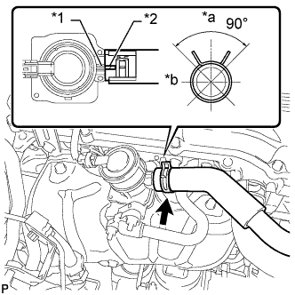

КЛАПАН ПЕРЕКЛЮЧЕНИЯ ПОДАЧИ ВОЗДУХА > УСТАНОВКА |
| 1. УСТАНОВИТЕ КЛАПАН ПЕРЕКЛЮЧЕНИЯ ПОДАЧИ ВОЗДУХА В СБОРЕ |
Установите теплозащитный экран выпускного коллектора № 1 на место.
Установите клапан переключения подачи воздуха и закрепите его 2 новыми гайками.
Подсоедините разъем.
| 2. УСТАНОВИТЕ ВПУСКНОЙ ПАТРУБОК № 4 |
 |
Установите впускной трубопровод № 4 с 2 новыми прокладками и закрепите его 4 новыми гайками в порядке, показанном на рисунке. Снова затяните гайки, обозначенные 1-3, до заданного крутящего момента.
Убедитесь, что гайки затянуты с требуемым крутящим моментом.
| 3. УСТАНОВИТЕ ТЕПЛОЗАЩИТНЫЙ ЭКРАН ВЫПУСКНОГО КОЛЛЕКТОРА № 1 |
Установите теплозащитный экран коллектора № 1 и закрепите его 5 болтами.
| 4. ПОДСОЕДИНИТЕ ШЛАНГ СИСТЕМЫ ПОДАЧИ ВОЗДУХА В НЕЙТРАЛИЗАТОР № 1 |
|  |
Подсоедините шланг № 1 системы подачи воздуха в нейтрализатор таким образом, чтобы метка, нанесенная на него краской, оказалась совмещенной с ребром клапана переключения подачи воздуха, как показано на рисунке.
| *1 | Ребро |
| *2 | Метка, нанесенная краской |
| *a | Верх |
| *b | Правая сторона |
| 5. УСТАНОВИТЕ УПЛОТНЕНИЕ № 1 МЕЖДУ ФАРТУКОМ ПРАВОГО ПЕРЕДНЕГО КРЫЛА И РАМОЙ |
Закрепите уплотнение между фартуком переднего крыла и рамой 5 фиксаторами.
| 6. УСТАНОВИТЕ КОРПУС ВОЗДУШНОГО ФИЛЬТРА |
Установите корпус воздушного фильтра и закрепите его 3 болтами.
Установите фильтрующий элемент воздушного фильтра.
| 7. УСТАНОВИТЕ ВОЗДУШНЫЙ ФИЛЬТР И ШЛАНГ |
 |
Установите шланг воздушного фильтра, совместив его метку с меткой крышки воздушного фильтра, как показано на рисунке.
| *1 | Метка |
| *a | Верхняя сторона |
| *b | Передняя сторона |
Затяните хомут шланга.
Введите в зацепление 4 зажима.
Закрепите провод соединения с массой и зажим с помощью болта.
Подсоедините разъем датчика массового расхода воздуха и закрепите 3 зажима.